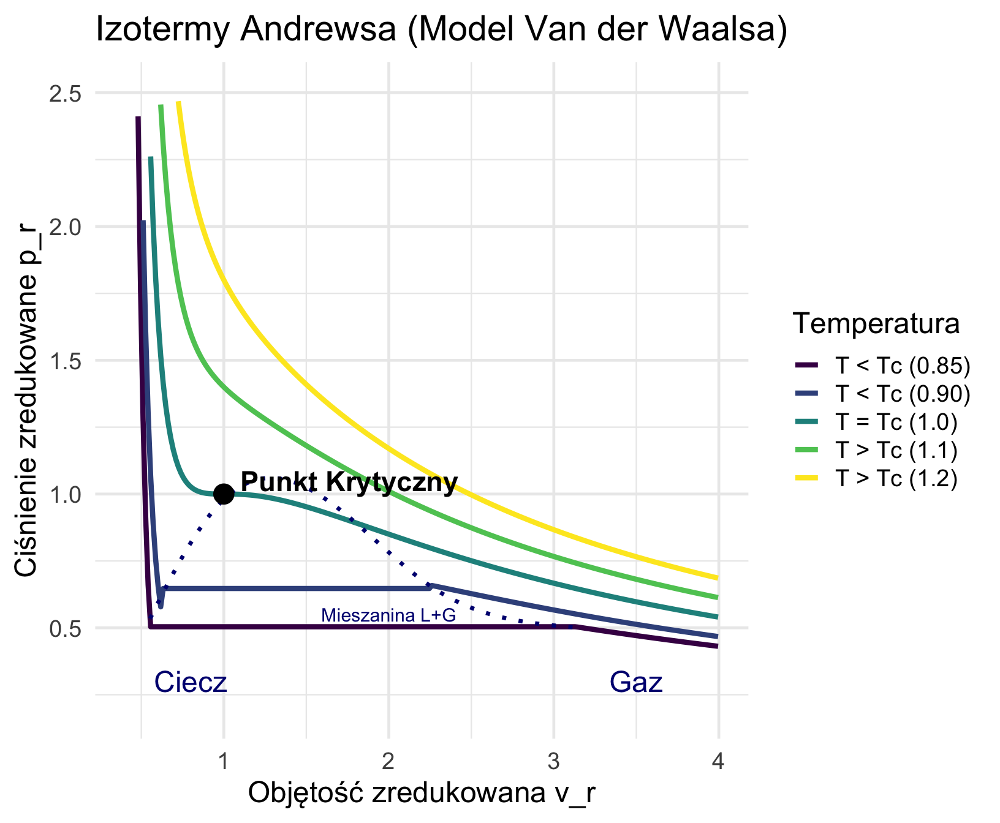

W4: Właściwości Substancji Czystych - I
Gazy Doskonałe, Mieszaniny i Rzeczywiste
dr hab. inż. prof. UPP Marek Urbaniak
Wydział Inżynierii Środowiska i Inżynierii Mechanicznej


Agenda Wykładu
- Substancje Czyste (Definicje, Fazy)
- Gaz Doskonały (Założenia modelu)
- Równanie Stanu (Clapeyron, Stała Gazowa \(R\))
- Ciepła Właściwe (Relacja Mayera, Wykładnik \(k\))
- Mieszaniny Gazowe (Prawo Daltona)
- Gazy Rzeczywiste (Van der Waals, Andrews)
1. Wprowadzenie do Substancji Czystych
Definicja
Substancja czysta to substancja, która ma stały i jednorodny skład chemiczny w całej swojej objętości.
- Przykłady: Woda (\(H_2O\)), Azot (\(N_2\)), Hel (\(He\)), Dwutlenek węgla (\(CO_2\)).
- A co z powietrzem? Jest mieszaniną gazów, ale w obszarze gazowym traktujemy je jako jednorodną substancję zastępczą (dopóki nie skraplamy tlenu/azotu). {.fragment}
Fazy Materii
Substancja czysta może występować w różnych fazach (stanach skupienia):
- Ciało Stałe (Solid): Silne wiązania, ustalona struktura (sieć krystaliczna). Cząsteczki drgają wokół położeń równowagi.
- Ciecz (Liquid): Cząsteczki blisko siebie (siły międzycząsteczkowe wciąż silne), ale mogą się przemieszczać (płynność).
- Gaz (Gas/Vapor): Cząsteczki daleko od siebie, poruszają się swobodnie i chaotycznie. Słabe oddziaływania.
Równowaga Fazowa
- Fazy mogą ze sobą współistnieć w równowadze (np. lód pływający w wodzie w \(0^\circ C\)).
- Przemiany fazowe:
- Topnienie / Krzepnięcie (Stałe \(\leftrightarrow\) Ciecz)
- Parowanie / Skraplanie (Ciecz \(\leftrightarrow\) Gaz)
- Sublimacja / Resublimacja (Stałe \(\leftrightarrow\) Gaz)
- Podczas przemiany fazowej (dla substancji czystej), przy stałym ciśnieniu, temperatura pozostaje STAŁA.
2. Model Gazu Doskonałego
Abstarakcja vs Rzeczywistość
Gaz doskonały to teoretyczny model, który przyjmuje następujące uproszczenia (Kinetyczna Teoria Gazów):
- Objętość cząsteczek = 0: Cząsteczki traktujemy jako punkty materialne. W rzeczywistości mają skończoną średnicę.
- Brak oddziaływań: Między cząsteczkami nie działają żadne siły przyciągania ani odpychania (poza momentem zderzenia).
- Zderzenia doskonale sprężyste: Nie ma straty energii kinetycznej podczas zderzeń.
Kiedy stosować Gaz Doskonały?
Model ten jest zadziwiająco dokładny dla większości gazów rzeczywistych, JEŚLI:
- Ciśnienie jest niskie: Cząsteczki są daleko od siebie (siły pomijalne).
- Temperatura jest wysoka: Energia kinetyczna dominuje nad energią potencjalną oddziaływań.
Adnotacja
Dla powietrza w warunkach otoczenia (\(p \approx 1\) bar, \(T \approx 20^\circ C\)), błąd modelu gazu doskonałego wynosi poniżej 1%.
3. Równanie Stanu (Clapeyron)
Wiązanie między ciśnieniem (\(p\)), temperaturą (\(T\)) i objętością (\(v\)) dla gazu doskonałego:
\[ p \cdot v = R \cdot T \]
Mnożąc przez masę \(m\) (gdzie \(V = m \cdot v\)):
\[ p \cdot V = m \cdot R \cdot T \]
- \(p\) – Ciśnienie absolutne \([Pa]\)
- \(V\) – Objętość \([m^3]\)
- \(T\) – Temperatura absolutna \([K]\) (\(T_{Kelvin} = T_{Celsjusz} + 273.15\))
- \(m\) – Masa \([kg]\)
- \(R\) – Indywidualna stała gazowa \([J/(kg\cdot K)]\)
Stała Gazowa Uniwersalna czy Indywidualna?
Tu studenci najczęściej robią błędy!
Uniwersalna Stała Gazowa (\(R_u\) lub \(\mathcal{R}\), lub \(R_m\), lub \(RM\))
Stała fizyczna, niezależna od rodzaju gazu: \[ R_u \approx 8314.46 \quad \frac{J}{kmol \cdot K} \] Używana w chemii w równaniu dla moli: \(pV = n R_u T\).
Indywidualna Stała Gazowa (\(R\))
Zależy od masy molowej (\(M\)) konkretnego gazu: \[ R = \frac{R_u}{M} \] Używana w technice w równaniu dla masy: \(pV = m R T\).
Przykłady Stałej Gazowej \(R\)
\[ R = \frac{8314}{M} \]
Powietrze (\(M \approx 29\) kg/kmol): \[ R_{pow} = \frac{8314}{29} \approx 287 \quad \frac{J}{kg \cdot K} \]
Wodór \(H_2\) (\(M \approx 2\) kg/kmol): \[ R_{H2} = \frac{8314}{2} \approx 4157 \quad \frac{J}{kg \cdot K} \]
Dwutlenek węgla \(CO_2\) (\(M \approx 44\) kg/kmol): \[ R_{CO2} = \frac{8314}{44} \approx 189 \quad \frac{J}{kg \cdot K} \]
4. Ciepła Właściwe
Ilość ciepła potrzebna do podgrzania 1 kg substancji o 1 K. Dla gazów zależy to od sposobu ogrzewania!
\(C_v\) (przy stałej objętości): Całe ciepło idzie na wzrost energii wewnętrznej \(u\). \[ C_v = \left( \frac{\partial u}{\partial T} \right)_v \]
\(C_p\) (przy stałym ciśnieniu): Ciepło idzie na wzrost \(u\) ORAZ na wykonanie pracy objętościowej (rozpychanie tłoka). \[ C_p = \left( \frac{\partial h}{\partial T} \right)_p \]
Relacja Mayera (Wyprowadzenie)
Dla gazu doskonałego entalpia \(h\) zależy tylko od temperatury. Definicja entalpii: \[ h = u + p \cdot v \]
Podstawiając z Clapeyrona (\(pv = RT\)): \[ h = u + R \cdot T \]
Różniczkując obie strony po temperaturze \(T\): \[ \frac{dh}{dT} = \frac{du}{dT} + R \]
Ponieważ dla g.d. \(dh/dT = C_p\) oraz \(du/dT = C_v\):
\[ C_p = C_v + R \]
Co wynika z Relacji Mayera?
\[ C_p > C_v \]
Ogrzewanie przy stałym ciśnieniu wymaga więcej energii niż przy stałej objętości, ponieważ gaz wykonuje pracę ekspansji (\(L = p \Delta V\)).
Ciepło dostarczone (\(Q_p\)) rozdziela się na: 1. Wzrost energii wewnętrznej (temperatury). 2. Pracę wypychania tłoka.
Przy \(V=const\), praca wynosi zero, więc całe ciepło idzie w temperaturę.
Uwaga na oznaczenia!
Wzór \(c_p - c_v = ...\) ma różne postacie w zależności od jednostek.
| Wersja | Wzór | Jednostka | Stała Gazowa |
|---|---|---|---|
| Techniczna (kg) | \(c_p - c_v = R\) | \(\frac{J}{kg \cdot K}\) | Indywidualna (\(R\)) |
| Molowa (kmol) | \(C_{p,m} - C_{v,m} = R_u\) | \(\frac{J}{kmol \cdot K}\) | Uniwersalna (\(MR\)) |
| Całkowita (Cały układ) | \(C_p - C_v = n \cdot R_u\) | \(\frac{J}{K}\) | Uniwersalna |
Zasada na Egzamin: Jeśli widzisz małe \(c\) i \(R\), nie wstawiaj tam \(n\)! Inżynierowie w elektrowniach liczą na kilogramy (\(R\)), a nie na mole (\(n \cdot R_u\)).
Zasada Ekwipartycji Energii
Teoria Ciepła Właściwego
Każdy stopień swobody cząsteczki wnosi wkład do energii wewnętrznej.
Średnia energia na jeden stopień swobody: \[ \langle E_i \rangle = \frac{1}{2} k T \]
- Ruch postępowy: 3 stopnie (\(3 \cdot \frac{1}{2} kT\)).
- Ruch obrotowy: +2 stopnie (cząsteczki liniowe) lub +3 stopnie (nieliniowe).
- Drgania (oscylacje): Wnoszą wkład energii kinetycznej i potencjalnej.
Ciepło Właściwe Gazów
Wartości Teoretyczne \(c_v\)
Wartość molowego ciepła właściwego zależy od liczby stopni swobody (\(f\)):
\[ (Mc_v) = \frac{f}{2} (MR) \]
| Typ Gazu | \(f\) | \((Mc_v)\) | Przykład |
|---|---|---|---|
| Jednoatomowy | 3 | \(1.5 R\) | Ar, He |
| Dwuatomowy | 5 | \(2.5 R\) | \(N_2, O_2\) |
| Wieloatomowy | 6 | \(3.0 R\) | \(H_2O, CH_4\) |
Wartości te zmieniają się z temperaturą z powodu efektów kwantowych („włączanie” stopni swobody).
Porównanie: Stała Boltzmanna (\(k\)) vs Wykładnik Adiabaty (\(\kappa\))
Obie wielkości mogą się mylić, przez podobne oznaczenie
| Cecha | Stała Boltzmanna | Wykładnik Adiabaty |
|---|---|---|
| Symbol preferowany | \(k\) (lub \(k_B\)) | \(\kappa\) (Kappa) lub \(\gamma\) (Gamma) |
| Symbol mylący | - | \(k\) (Występuje w starszych źródłach - unikać!) |
| Co to jest? | Stała fizyczna Wszechświata (Mikro) | Własność termodynamiczna gazu (Makro) |
| Wzór definicyjny | \(k = \frac{R_u}{N_A}\) | \(\kappa = \frac{c_p}{c_v}\) |
| Rząd wielkości | \(\approx 1,38 \cdot 10^{-23}\) (Bardzo mała) | \(> 1\) (Dla powietrza \(\approx 1,4\)) |
| Jednostka | \([\text{J}/\text{K}]\) | Brak (liczba bezwymiarowa) |
Energia i Entalpia Gazu Doskonałego
Pamiętamy z I Zasady, że dla g.d. te parametry zależą tylko od temperatury (Eksperyment Joule’a).
Dlatego zmiany tych parametrów liczymy zawsze tak samo, niezależnie od procesu (nawet jeśli \(p\) czy \(v\) się zmieniają!):
\[ \Delta u = C_v \cdot (T_2 - T_1) \]
\[ \Delta h = C_p \cdot (T_2 - T_1) \]
To potężne uproszczenie w obliczeniach inżynierskich.
5. Mieszaniny Gazowe
W technice rzadko pracujemy z czystym tlenem czy azotem. Zazwyczaj mamy mieszaninę (np. spaliny w silniku, powietrze w wentylacji).
Model Daltona pozwala traktować mieszaninę gazów doskonałych jak jeden gaz zastępczy.
Potrzebujemy tylko obliczyć zastępczą stałą gazową \(R_{miesz}\) i zastępcze ciepło właściwe.
Prawo Daltona (Ciśnienia)
Ciśnienie całkowite mieszaniny gazów doskonałych jest równe sumie ciśnień cząstkowych jej składników.
\[ p_{calk} = p_1 + p_2 + ... + p_n = \sum p_i \]
Ciśnienie cząstkowe (\(p_i\)): To ciśnienie, jakie wywierałby dany składnik, gdyby SAM zajmował całą objętość zbiornika \(V\) w tej samej temperaturze \(T\).
Wizualizacja Prawa Daltona

Udziały Molowe (\(y_i\)) i Obliczanie \(p_i\)
W g.d ciśnienie wynika z liczby uderzeń cząsteczek. Zatem ciśnienie cząstkowe zależy wprost od ilości moli danego gazu:
\[ y_i = \frac{n_i}{n_{calk}} \quad (\text{Ułamek molowy}) \]
Z Prawa Daltona wynika prosta zależność:
\[ p_i = y_i \cdot p_{calk} \]
Dlaczego w atmosferze (\(p \approx 100 kPa\)) ciśnienie tlenu (“ciśnienie parcjalne”) wynosi ok. 21 kPa? Bo tlen stanowi 21% cząsteczek powietrza (\(y_{O2} = 0.21\)).
6. Gazy Rzeczywiste - Granice Modelu
Gdy ciśnienie jest bardzo wysokie (np. w butli z tlenem 200 bar) lub temperatura niska (skraplanie), założenia g.d. przestają działać.
- Cząsteczki są upakowane ciasno \(\to\) ich własna objętość zaczyna mieć znaczenie.
- Siły przyciągania (van der Waalsa) zaczynają sklejać cząsteczki.
- Efekt Joule’a-Thomsona: Dławienie (\(h=const\)) powoduje zmianę temperatury.
Potrzebujemy lepszego równania stanu.
Równanie Van der Waalsa
\[ \left( p + \frac{a}{v^2} \right) (v - b) = R T \]
Dwie poprawki względem Clapeyrona (\(pv=RT\)):
- Człon kohezji (\(a/v^2\)): Uwzględnia przyciąganie między cząsteczkami. Zmniejsza efektywne ciśnienie wywierane na ścianki (bo cząsteczki są “ściągane” do środka przez sąsiadów).
- Kowolumen (\(b\)): Uwzględnia objętość własną cząsteczek. Dostępna przestrzeń ruchu to nie całe \(v\), ale \((v-b)\).
Izotermy Andrewsa (Gaz Rzeczywisty)
Na wykresie p-v gaz rzeczywisty zachowuje się inaczej niż hiperbola gazu doskonałego (\(p \sim 1/v\)).
- Dla \(T > T_{kryt}\): Izotermy gładkie (jak g.d.).
- Dla \(T < T_{kryt}\): Pojawia się poziomy odcinek. To współistnienie cieczy i pary (wrzenie przy stałym ciśnieniu).
- Gdybyśmy użyli tu modelu \(pV=mRT\), dostalibyśmy błąd rzędu 100%!
Zasada Stanów Odpowiednich
Inżynierowie poradzili sobie z różnorodnością gazów wprowadzając Współczynnik Ściśliwości \(Z\):
\[ Z = \frac{pv}{RT} \]
- Dla gazu doskonałego: \(Z = 1\).
- Dla gazu rzeczywistego: \(Z \neq 1\) (może być 0.8, może być 1.2).
Parametry Zredukowane
Sprowadzamy różne gazy do “wspólnego mianownika”, dzieląc ich parametry przez parametry w punkcie krytycznym:
\[ p_r = \frac{p}{p_{kryt}}, \quad v_r = \frac{v}{v_{kryt}}, \quad T_r = \frac{T}{T_{kryt}} \]
Zasada: Różne gazy w tych samych stanach zredukowanych (\(p_r, T_r\)) mają w przybliżeniu to samo \(Z\).
Analogia
Zasadę tę można porównać do przeliczania wieku psa na “ludzkie lata”.
Podsumowanie Wykładu 4
- Gaz Doskonały: Dobry dla niskich ciśnień. Równanie \(pv=RT\).
- Stała \(R\): Pamiętaj o różnicy między uniwersalną (\(8314\)) a indywidualną (\(R_u/M\)).
- Ciepła: \(C_p = C_v + R\). Wartości zależą od stopni swobody (\(f\)).
- Mieszaniny: Ciśnienia cząstkowe sumują się (Dalton).
- Rzeczywistość: Siły międzycząsteczkowe (Van der Waals) powodują efekty takie jak skraplanie czy zmiana temperatury przy dławieniu (Joule-Thomson).
Zapowiedź W5
W kolejnym wykładzie wejdziemy w obszar Pary Wodnej: wrzenie, tablice parowe, turbiny!
Termodynamika Techniczna (W4)